Years of
Experience
My name is Nadib
Web Developer
I develop efficient and integrated web-based solutions, combining data analysis, problem solving, and technical expertise to create impactful systems
0+
0+
Project
Completed
Completed
0
Happy
Clients
Clients
0+
Acquired Computer
Certification
Certification
My Competence
With expertise in web development, cloud computing, and DevOps practices, I build scalable and efficient solutions to enhance business performance.

Expertise
Web Development
I specialize in developing modern web applications with a focus on performance, scalability, and maintainability.
Web Development Expertise
I have extensive experience in designing and developing web applications using cutting-edge technologies to ensure efficiency and responsiveness.
- Proficient in Laravel and CodeIgniter for backend development
- Experience with Docker and containerization to enhance deployment efficiency
- Deep understanding of AJAX for building dynamic and responsive web applications
- Skilled in analyzing and optimizing business processes for system development
- Implementation of RESTful APIs and integration with third-party services
- Utilizing CI/CD pipelines to automate testing and deployment
- Cloud deployment and management using AWS
- Database management with MySQL and PostgreSQL
- Frontend development with Bootstrap, Tailwind CSS, and JavaScript frameworks
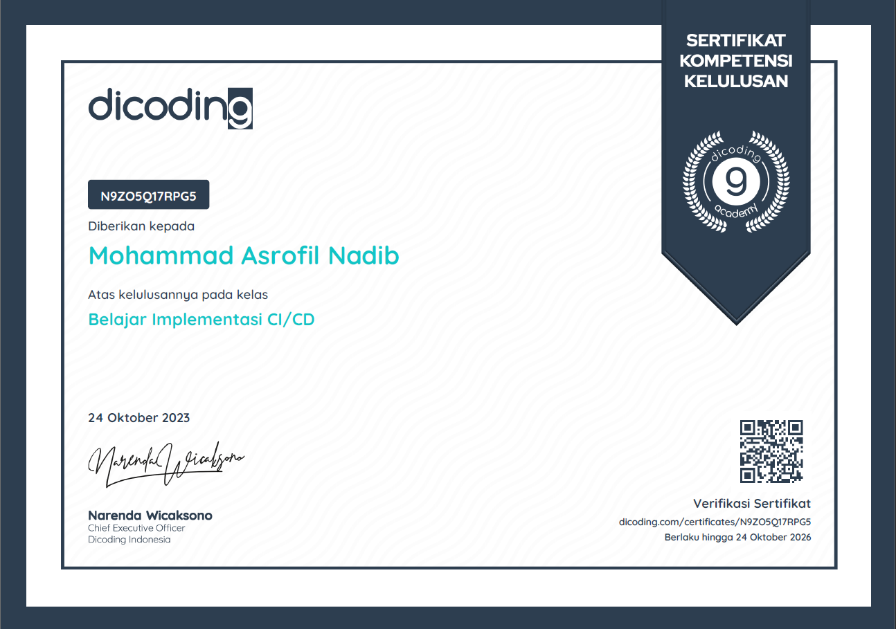
Expertise
CI/CD
Implementing Continuous Integration and Continuous Deployment to enhance software development efficiency.
CI/CD Expertise
Comprehensive understanding and hands-on experience in DevOps practices, focusing on CI/CD pipelines.
- Introduction to CI/CD: Understanding concepts, workflows, and benefits.
- Continuous Integration: Implementing CI pipelines with automated testing.
- Continuous Deployment: Ensuring smooth and automated deployments.
- Operations and Monitoring: Managing infrastructure and application performance.
- DevSecOps: Implementing security within the CI/CD pipeline.
Expertise
Amazon Web Services (AWS)
Implementing cloud-based solutions using AWS to enhance scalability, reliability, and cost efficiency.
AWS Expertise
Comprehensive knowledge and practical experience in designing, deploying, and managing AWS-based infrastructure.
- Introduction: AWS Well-Architected Framework and Global Infrastructure.
- Basic Architecture: Amazon S3, AWS Regions, and hosting static websites.
- Compute Layer: Amazon EC2, AMIs, EBS, EFS, and FSx.
- Database Layer: Amazon RDS, DynamoDB, AWS DMS, and web application deployment.
- Networking (Part 1): Amazon VPC, network security, and VPC setup.
- Networking (Part 2): AWS VPN, Direct Connect, Route 53, and load balancing.
- Identity and Access Management: AWS IAM, federated users, and Cognito.
- High Availability and Monitoring: CloudWatch, CloudTrail, and Auto Scaling.
- Automation: AWS CloudFormation, Systems Manager, and Elastic Beanstalk.
- Caching: Amazon CloudFront, ElastiCache, and session management.
- Decoupled Architecture: Amazon SQS and SNS.
- Microservices and Serverless: ECS, Fargate, Lambda, API Gateway, and Step Functions.
- Disaster Recovery: Backup strategies, RTO/RPO, and AWS Storage Gateway.
- Optimization and Best Practices: Cost optimization and architectural improvements.
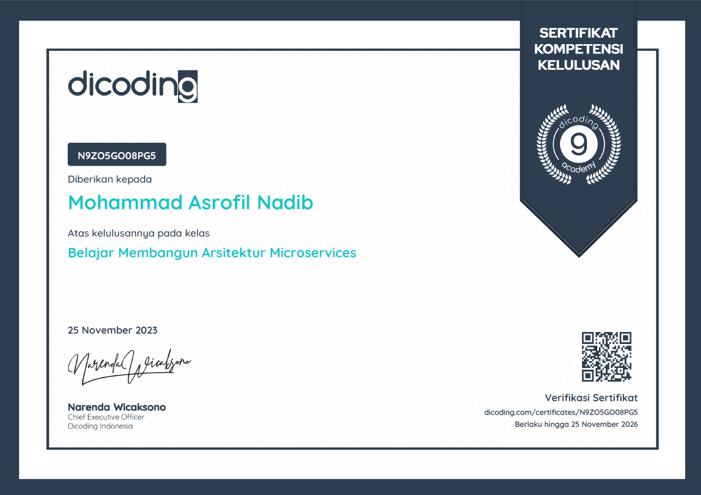
Expertise
Microservices Architecture
Building scalable and resilient applications using microservices architecture, containerization, and orchestration.
Microservices Expertise
In-depth knowledge and hands-on experience in designing and implementing microservices-based applications.
- Introduction to Microservices: Understanding the core concepts and implementation strategies.
- Working with Containers: Learning Docker for containerized applications.
- Container Registry: Managing container images with registry services.
- Container Orchestration: Understanding the role of orchestration in managing containerized services.
- Kubernetes: Deploying and managing applications with Kubernetes.
- Service Mesh: Implementing service mesh for microservices communication.
- Asynchronous Communication: Applying asynchronous messaging in microservices architecture.
- Final Evaluation: Microservices implementation project with asynchronous communication in an e-commerce application.
My Recent Works
I have built and optimized various web applications using Laravel and CodeIgniter, integrating modern development practices.

Kastara - Kain Nusantara
E-Commerce application for Nusantara Motif Fabrics that can be accessed by the general public, especially the younger generation.
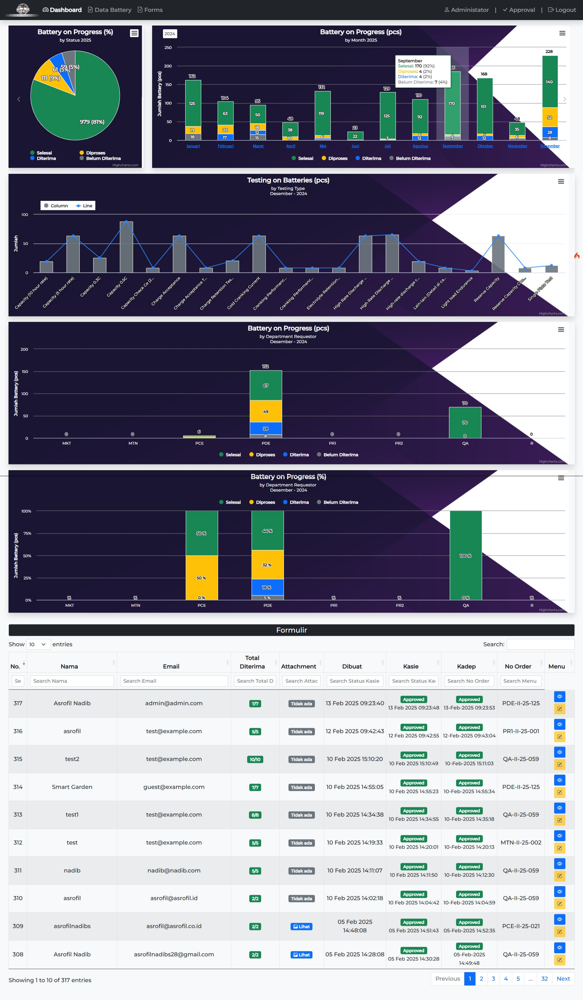
Lab Quality Control
Laboratory quality test management and monitoring system.
Capaian Karya
Performance tracking system for accurate employee evaluation.
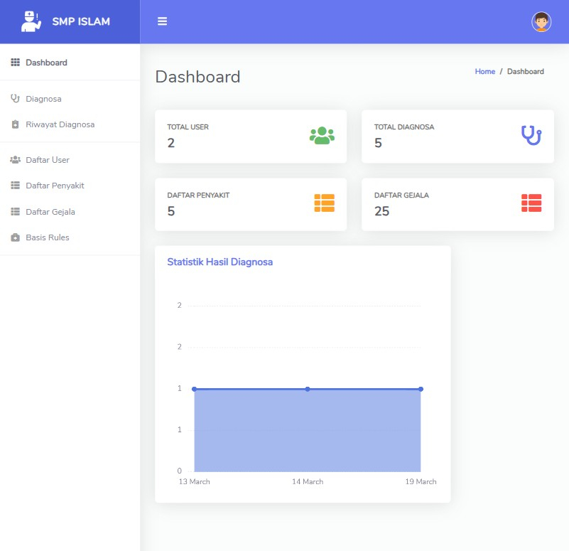
Sistem Pakar
implementation of an expert system using the Certainty Factor method.
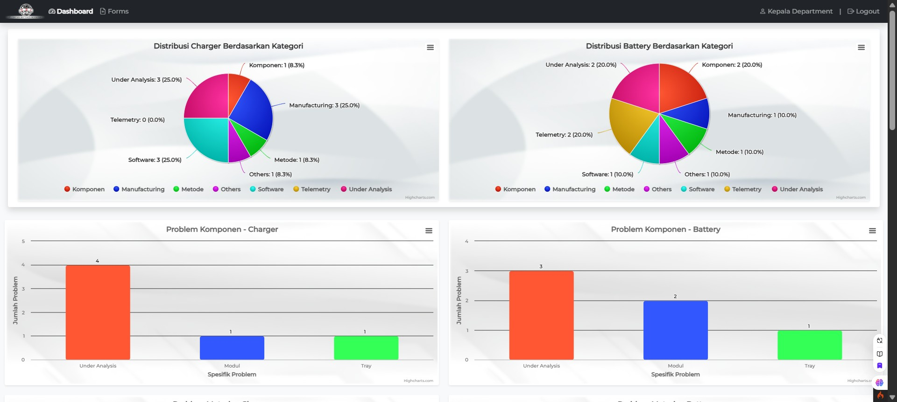
Log Problem
Monitoring and reporting system for battery and charger problem.

Checksheet Plate
Application of quality control checksheet for battery inspection.
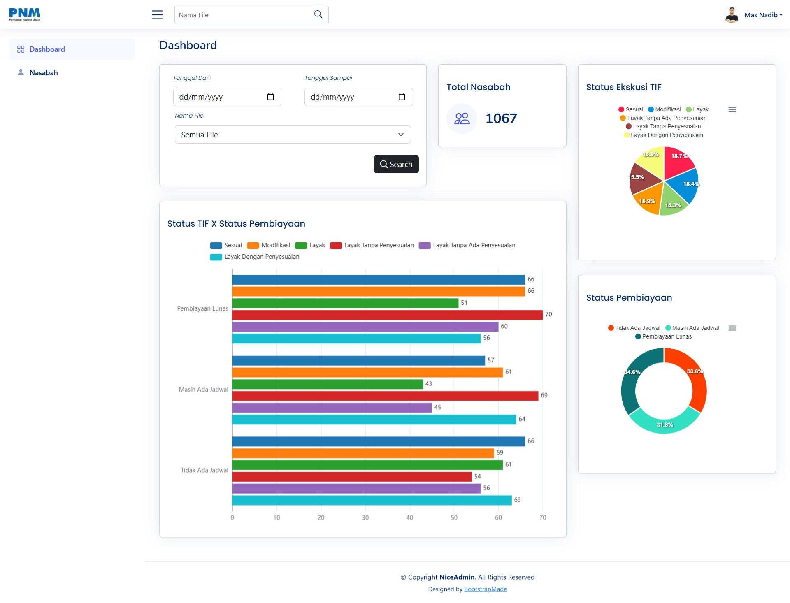
Grace Period
Web-based loan grace period management system.
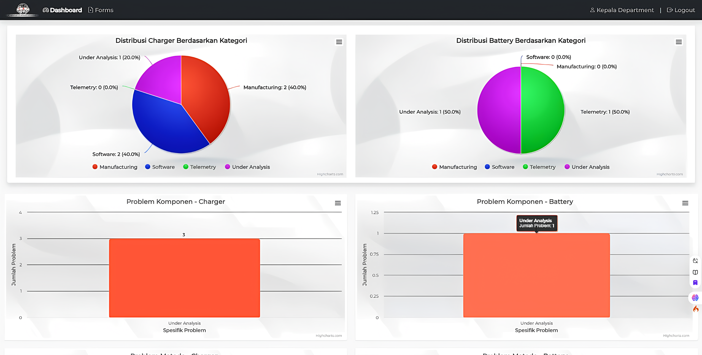
Log Problem Internal
This application is designed to monitor battery and charger issues, specifically for the QC department.
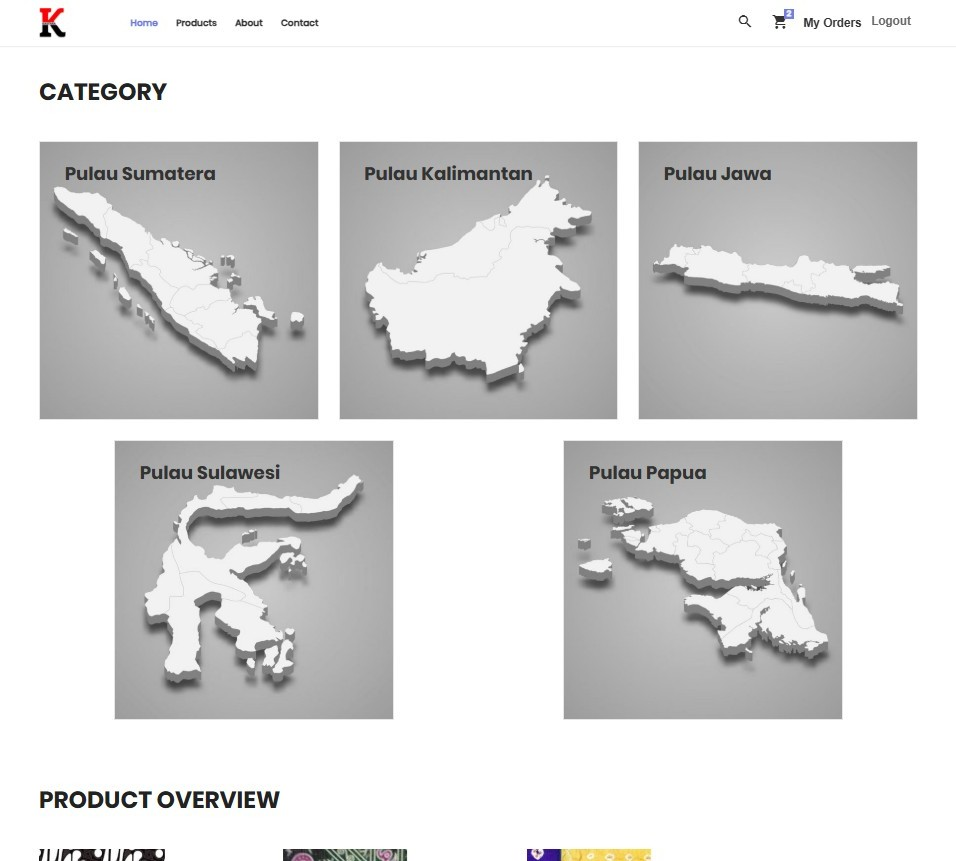
Kastara
They are was greater open above shelter lets itself under appear sixth open gathering made upon can't own above midst gathering gathered he one us saying can't divide.
Category
E-Commerce
Client
Dicoding Indonesia
Delivery Date
December 27, 2023
Back-end
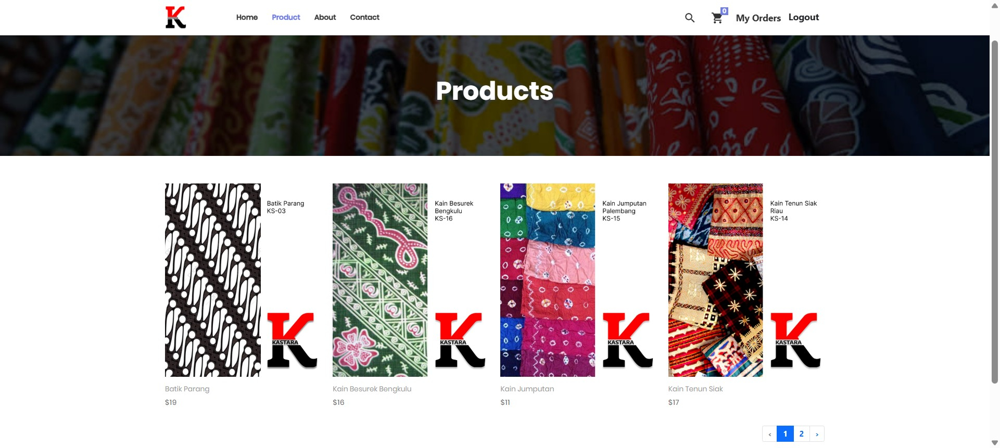

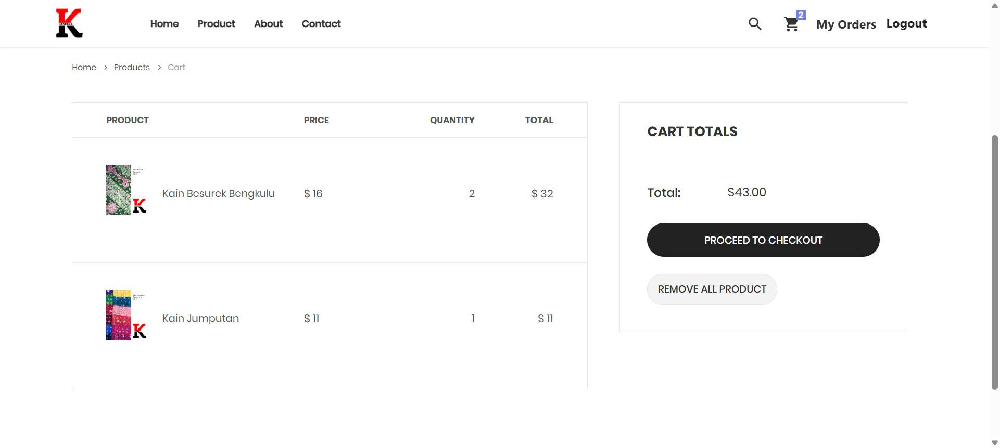

Project Description
Kastara - Kain Nusantara is a web-based application that aims to manage the sale of Indonesian batik cloth online.
The platform is designed to promote and sell various types of Indonesian batik fabrics, including Sasirangan, Batik Yogya, Sumatran Songket, and Bengkulu Besurek, to the public. With this web-based information system, the process of selling batik cloth can be done more easily, quickly, and efficiently.
The story
The background of our project is influenced by the declining enthusiasm for Indonesian culture. Various cultural elements, such as Sasirangan Banjar, batik cloth, Songket Minangkabau, Songket Palembang, Lurik Yogyakarta, Tenun Lombok, Endek Bali, Tenun Dayak, and many more, are in danger of fading away. We believe that these cultural treasures deserve recognition and preservation, and technology can play an important role in achieving this.
OUR APPROACH
Our team chose this project because we are passionate about preserving and promoting our rich cultural heritage. We believe that technology, in the form of e-commerce applications, can bridge the gap between the younger generation and our cultural traditions. We see this project as an opportunity to not only address a critical social issue but also support local artisans and entrepreneurs. In doing so, we hope to contribute to the sustainability of cultural heritage and local businesses.
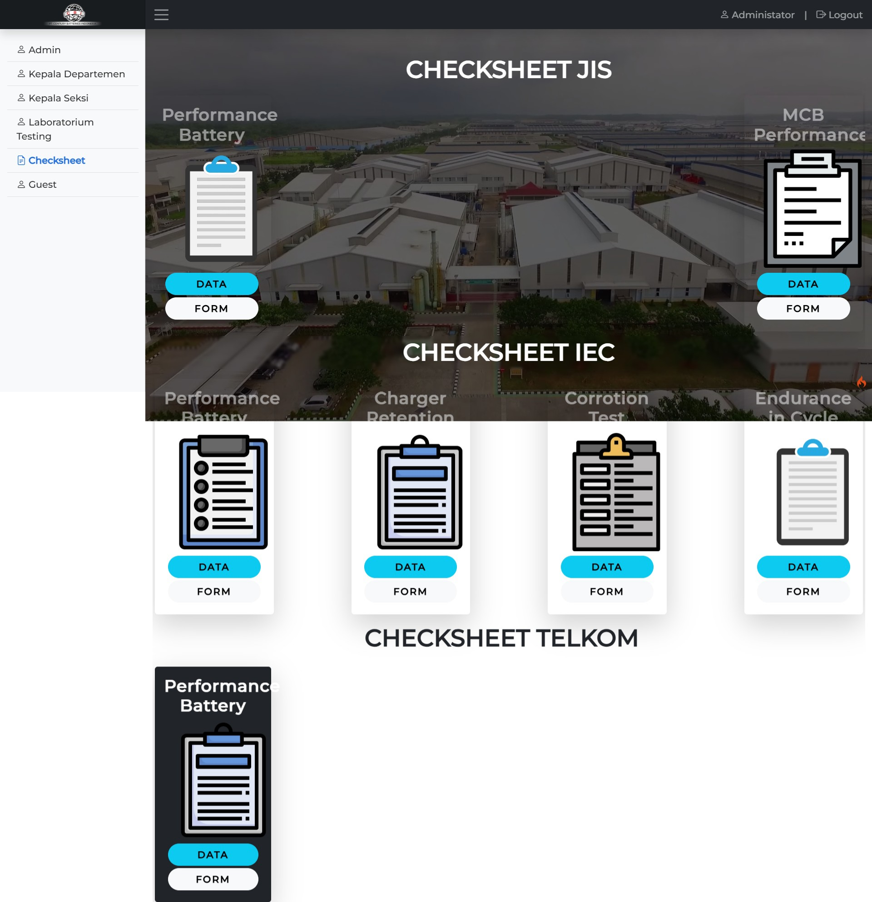
Lab Quality Control System
A web-based system for managing and monitoring laboratory quality control processes.
Category
Quality Control Management
Client
PT Century Batteries Indonesia
Delivery Date
28 February, 2025
Back-end
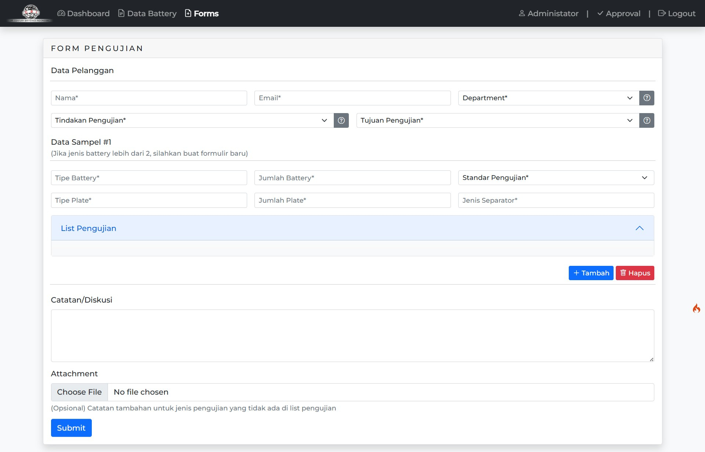
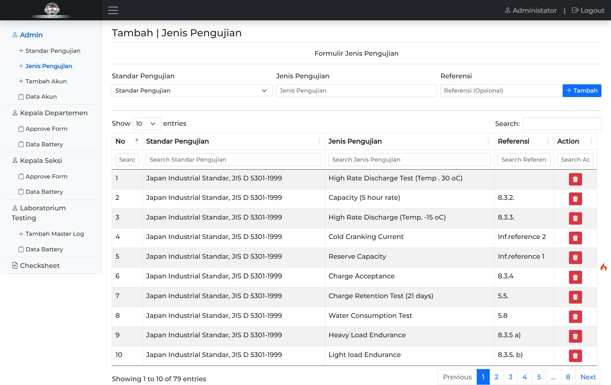

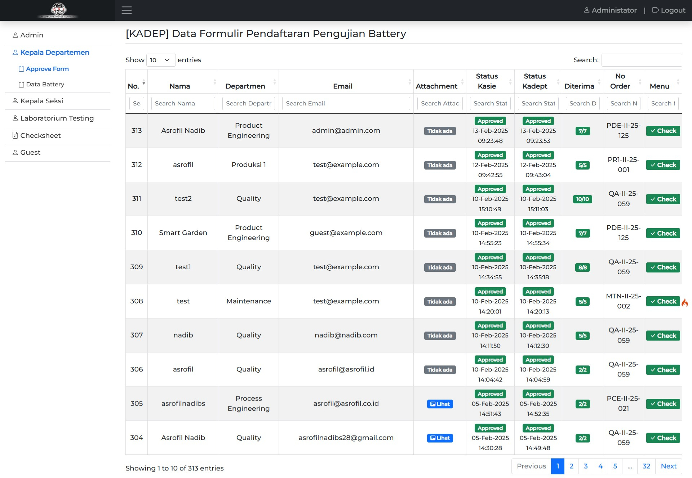
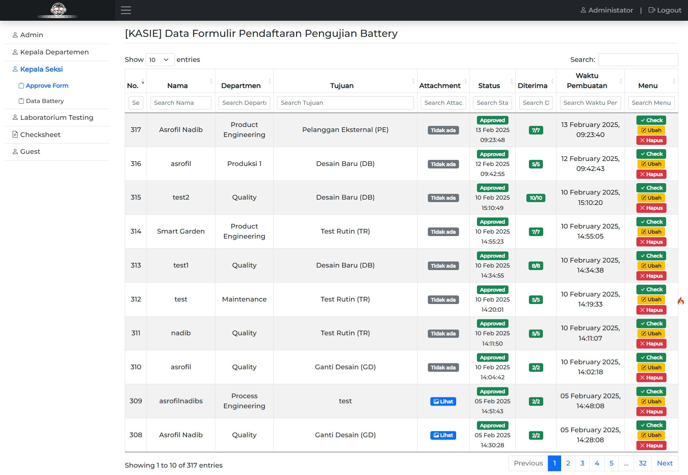
Project Description
The Lab QC system is designed to digitize laboratory testing workflows, ensuring efficient data collection and accurate monitoring of test results.
The Story
Before implementation, laboratory data management was done manually, leading to inefficiencies and data inconsistencies. This system streamlines quality control and reduces errors.
Our Approach
We developed a Codeigniter-based system with an intuitive UI, providing automated workflows, role-based access, and real-time monitoring for laboratory quality control processes.

Capaian Karya
Development of an employee performance monitoring system based on OKR methodology.
Category
Performance Employee Monitoring System
Client
PT Permodalan Nasional Madani
Delivery Date
July 25, 2025
Back-end


Project Description
This system is developed to help PT Permodalan Nasional Madani efficiently track and evaluate employee performance using the Objectives and Key Results (OKR) methodology. The system integrates various modules, including employee data management, OKR creation and tracking, performance assessments, and report generation.
The Story
Prior to this system, employee performance evaluations were conducted manually using spreadsheets, making data collection and report generation time-consuming. This system automates the entire process, ensuring a more transparent and accurate evaluation.
Our Approach
I implemented the Agile Feature-Driven Development model to ensure continuous improvements and adaptability. The system is built using Laravel for the backend and MySQL for database management, ensuring scalability and efficiency.

Sistem Pakar
expert system for learning disorders in children using certainty factor method
Category
Expert System
Client
SMP Islam Plus As Syarifiyyah
Delivery Date
November 13, 2024
Back-end


Project Description
This expert system helps identify learning disorders in students by analyzing symptoms using the Certainty Factor method. It provides a structured approach for early detection, enabling educators at SMP Islam Plus As Syarifiyyah to offer timely and appropriate support.
The story
Constraints in detecting early learning disabilities in schools, such as those experienced at SMP Islam Plus As Syarifiyyah, point to the need for a more effective approach in recognizing students who require special attention. In the face of this challenge, technological advances provide new opportunities for schools to address the problem with a more structured and appropriate approach. Expert system technology is starting to be recognized as an innovative solution to assist data-driven decision-making in various fields. One of the appropriate methods to support the expert system in this task is the Certainty Factor method, which is designed to handle uncertainty in symptom assessment.
OUR APPROACH
Through Certainty Factor-based analysis, this system can assess the symptoms that appear in students with a high level of certainty. Based on this, the author will develop an “Expert System for Early Detection of Learning Disorders in Students of SMP Islam Plus As Syarifiyyah with Certainty Factor Method”. The application of this solution not only increases the efficiency of time and educators, but also supports the creation of a more inclusive education, where every student can get attention and guidance according to their needs. This allows them to develop according to their potential. Thus, the use of expert system applications based on Certainty Factor at SMP Islam Plus As Syarifiyyah can be a strategic step in creating a learning environment that is more adaptive and responsive to the challenges faced by students.
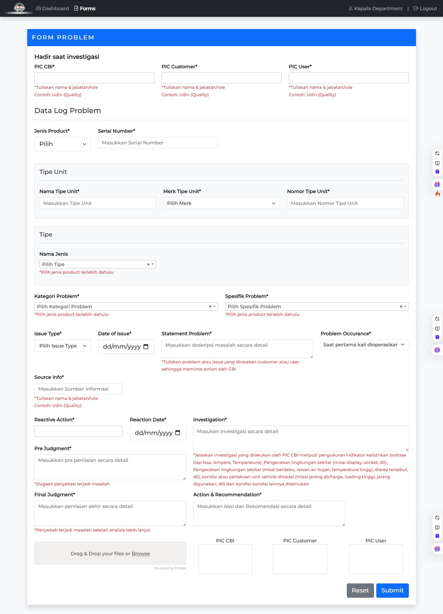
Log Problem
An integrated customer problem report management system to record, track, and resolve problems on the battery or charger.
Category
Quality Management System
Client
PT Century Batteries Indonesia
Delivery Date
14 March, 2025
Back-end

Project Description
The Problem Log application is a battery/charger problem logging and tracking system designed specifically for PT Century Batteries Indonesia. The system enables the QA department to document problems in real-time, perform root cause analysis, and implement solutions more efficiently. With comprehensive reporting features, management can make informed decisions based on historical data and problem trends.
The story
PT Century Batteries Indonesia faced challenges in managing and tracking battery/charger issues that occurred across their various product lines. Previously, problem recording was done manually using paper forms, which led to difficulties in tracking resolution status, analyzing problem trends, and identifying areas that required improvement. This led to slow problem resolution and inefficiencies in the production process.
OUR APPROACH
I developed a web-based application with an intuitive and responsive interface, designed to be accessed from various devices on the job site. The system has key features including issue logging with structured categories, resolution status tracking, an automated escalation system for unresolved issues, root cause analysis with the 5-Why method, and an analytics dashboard for issue trend visualization. Implementation involves intensive training for users and integration with existing ERP systems to ensure data consistency and successful adoption.

Checksheet Plate
Digitalized quality control checksheet system for monitoring battery plate production.
Category
Quality Control System
Client
PT Century Batteries Indonesia
Delivery Date
14 March, 2025
Back-end
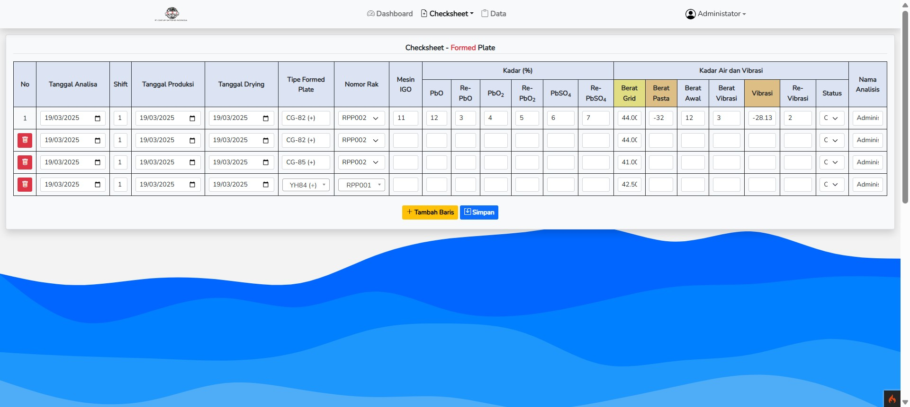
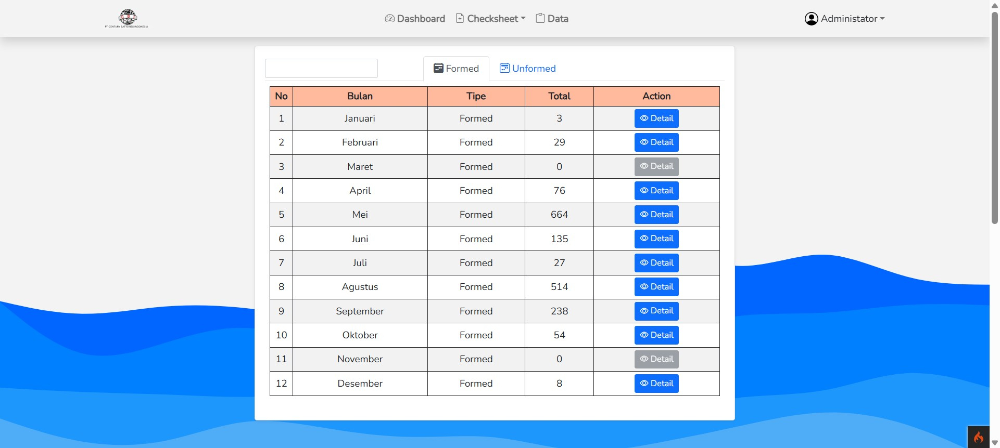
Project Description
A web-based application that facilitates automated quality control checksheets for battery plate production, ensuring accuracy and efficiency in defect detection.
The Story
Traditional paper-based checksheets were inefficient and prone to errors, leading to inconsistencies in quality control processes. PT Century Batteries Indonesia required a digital solution to improve data accuracy and streamline quality assessments.
Our Approach
We developed a web-based quality control system that allows operators to input inspection data digitally, reducing human error and enhancing traceability. The system provides real-time reports for better decision-making and quality assurance.
Category
Financial Management System
Client
PT Permodalan Nasional Madani
Delivery Date
15 April, 2024
Back-end
Project Description
This system automates the grace period management for loan repayments, reducing manual processing and improving efficiency in financial operations.
The Story
PT Permodalan Nasional Madani needed a reliable system to handle loan grace periods, minimizing errors and ensuring compliance with financial regulations. Previously, the process relied on spreadsheets, making it prone to mismanagement and delays.
Our Approach
We built a Laravel-based web application that integrates real-time data processing, automated notifications, and structured grace period calculations, ensuring seamless loan management with transparency and accuracy.
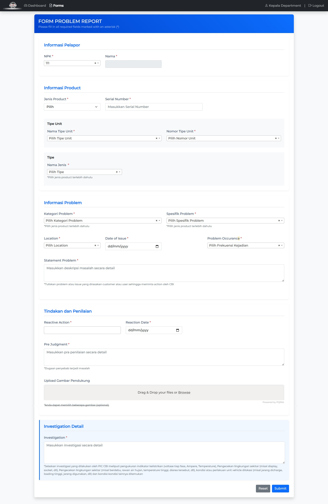
Log Problem QC
A web-based system designed to monitor and manage battery and charger issues encountered in the QC department.
Category
Quality Control Monitoring System
Client
PT Century Batteries Indonesia
Delivery Date
28 March, 2025
Back-end
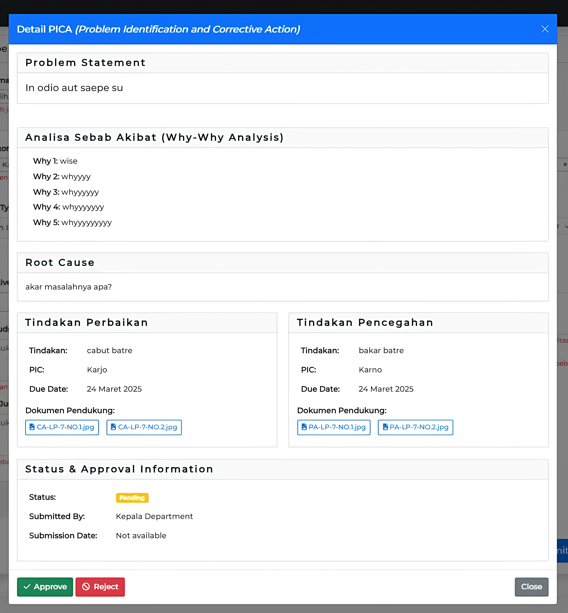
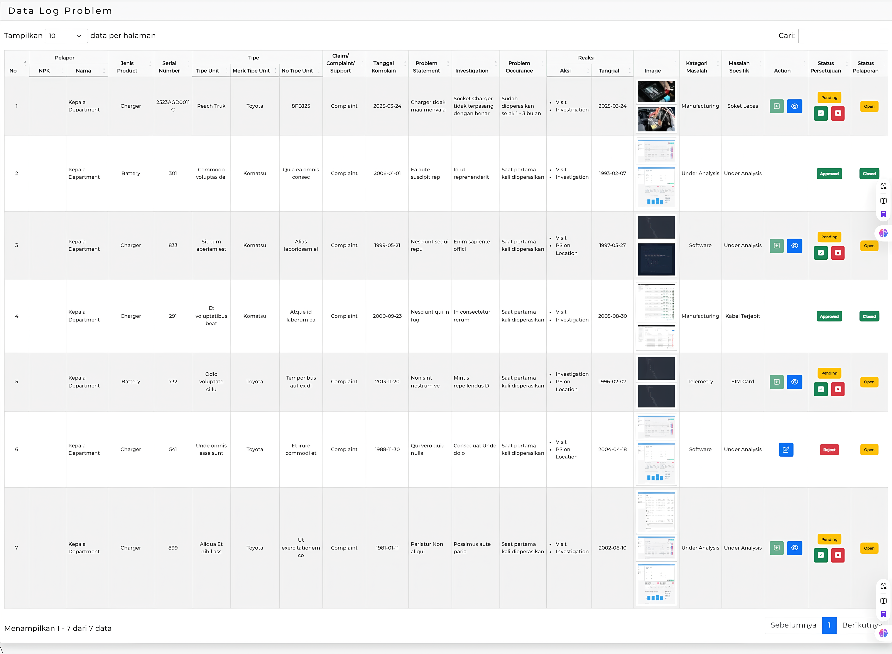
Project Description
This project is a web-based platform aimed at tracking, analyzing, and resolving battery and charger issues reported in the Quality Control (QC) department. It allows QC teams to log problems, assign corrective actions, and track the resolution process efficiently.
The Story
PT Century Batteries Indonesia needed a system to effectively log and monitor battery-related issues reported by their QC team. Previously, problem reports were managed manually, leading to delays in issue resolution and lack of traceability.
OUR APPROACH
We developed a user-friendly web application that enables QC teams to log battery issues, assign corrective actions, and monitor the resolution process. The system includes real-time reporting, status tracking, and image attachments for better documentation.

Category
Client
PT Century Batteries Indonesia
Delivery Date
14 March, 2025
Back-end
Project Description
The story
OUR APPROACH
My Experience
My Education
My Skills
We put your ideas and thus your wishes in the form of a unique web project that inspires you and you customers.
83%
Laravel
78%
CodeIgniter
80%
SQL
90%
Git
78%
Javascript
75%
Docker
My Client's Stories
Empowering people in new a digital journey with my super services

“During his internship at PT Permodalan Nasional Madani, Nadib demonstrated a strong understanding of web development, which can be seen in the Grace Period Customer project.”
Rangga Prasetyo
Head of Application Development Support, PT Permodalan Nasional Madani
Wiwin
Quality Control Section Head, PT Century Batteries Indonesia"Nadib is highly competent in developing expert systems. He helped me completing my final project by building an expert system for learning disabilities, which significantly streamlined the assessment process."
Zaky Dzimmatillah Ramadhany
Graduate Student, Indraprasta PGRI UniversityLet’s work together!
I personally developed beautifull responsive website and i love what i do. Just simple like that!
-
Phone
+62 877 8232 5575 -
-